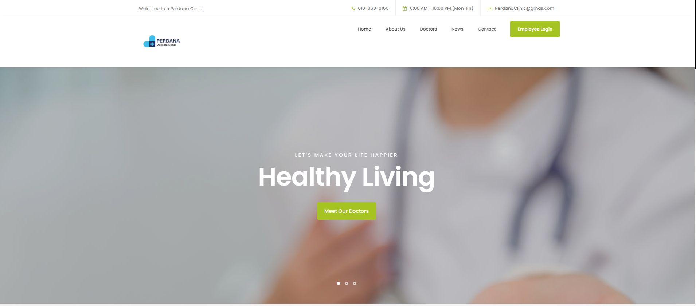
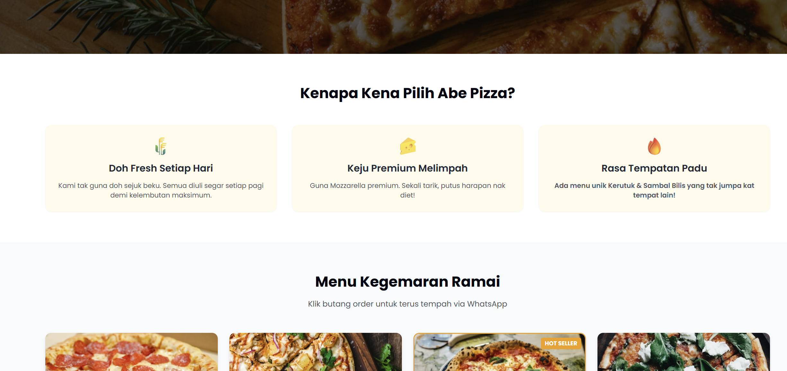
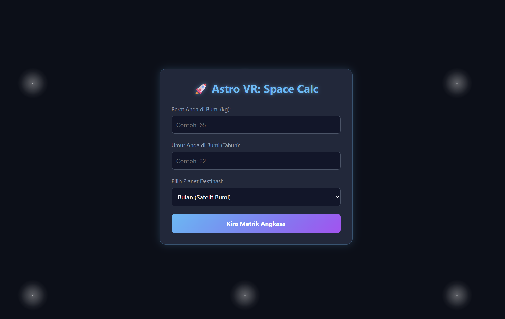
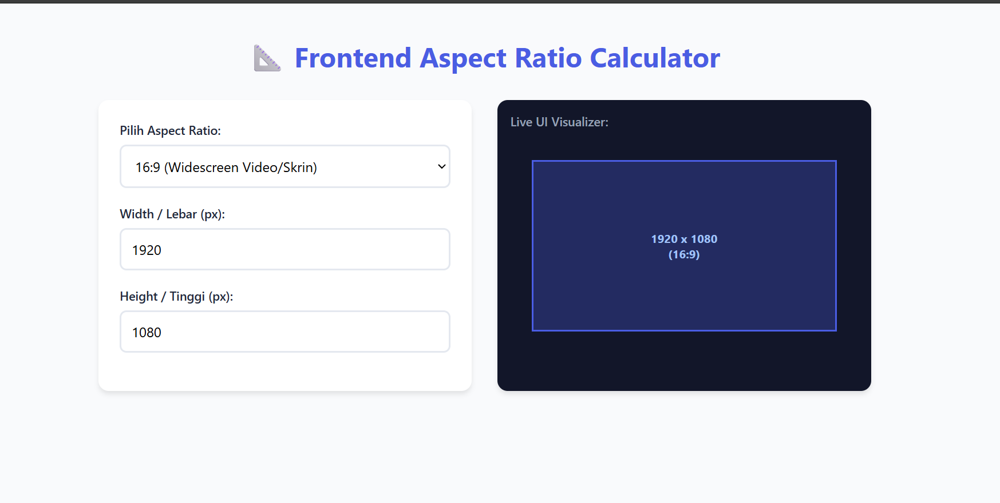
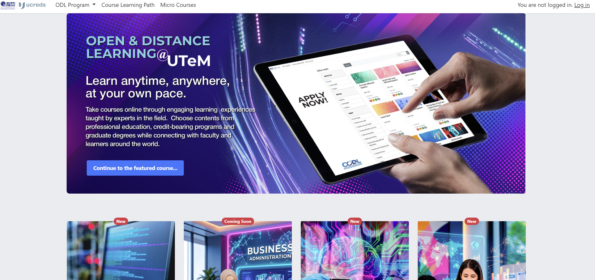

Projek Perisian & Pengalaman
Eksplorasi dokumentasi teknikal bagi sistem dan aplikasi inovatif yang telah saya bangunkan.

Clinic Information System
Membangunkan sistem klinik berasaskan web yang dilengkapi dengan ciri pengurusan rekod pesakit yang selamat, penjadualan janji temu, dan papan pemuka (dashboard) pengurusan yang efisien untuk kakitangan perubatan.
Astro VR Planet
Membangunkan aplikasi Realiti Maya (VR) interaktif yang membolehkan pengguna merentasi ruang angkasa lepas, meneroka anatomi planet, dan memahami simulasi graviti dalam persekitaran tiga dimensi yang realistik.

Abe Pizza Online Ordering Website
Membangunkan platform e-dagang pesanan makanan dalam talian yang responsif untuk perusahaan tempatan, Abe Pizza. Berjaya membantu meningkatkan trafik pelanggan daripada 50 kepada 100 orang sehari, serta melonjakkan penglibatan media sosial sebanyak 30%.

Astro VR Theme: Space Weight & Age Calculator
Sebuah aplikasi web interaktif simulasi fizik angkasa. Mengira berat dan umur pengguna di planet alternatif (seperti Marikh dan Musytari) secara dinamik dengan formula matematik graviti. Dibina khusus sebagai komponen mikro bagi ekosistem Astro VR Planet.

Frontend Aspect Ratio & Resolution Calculator
Alat utiliti produktiviti barisan hadapan (*frontend development*) untuk mengira nisbah aspek paparan (16:9, 4:3, dll.) secara automatik. Dilengkapi dengan komponen *Live UI Visualizer* yang mengubah dimensi kontena mengikut skala input secara masa nyata.

ucreads: Digital Book Club & Reading Tracker
Membangunkan aplikasi pengurusan dan penjejakan pembacaan digital (*reading tracker platform*). Sistem ini membolehkan pengguna menyusun perpustakaan peribadi, merekod kemajuan pembacaan semasa secara interaktif, berkongsi ulasan analitikal, serta mengakses direktori cadangan buku pintar.